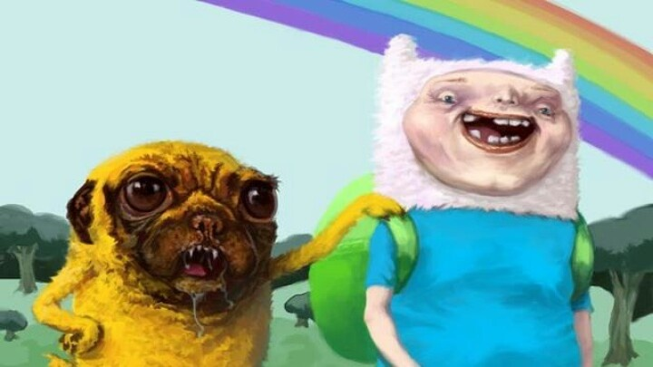

Текущий фильтр: none
Интенсивность: 0%
Интенсивность: 0%
Как использовать:
1. Наведите курсор на изображение - будет применён фильтр "sepia"
2. Перемещайте курсор слева направо для изменения интенсивности эффекта
3. Удерживайте клавиши для других фильтров:
- Ctrl - размытие (blur)
- Alt - оттенки серого (grayscale)
- Shift - поворот оттенка (hue-rotate)